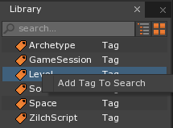
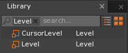
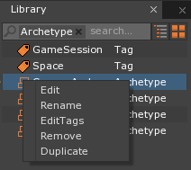
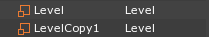
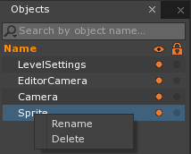
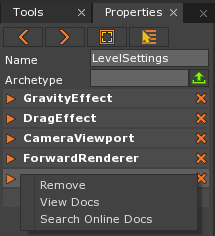
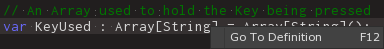
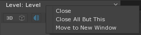

Right-Click Submenu
The Right-Click Submenu is a simple-to-use tool that gives different functionality depending on if it is used in the Library, Object, or Properties Window, or even inside a ZilchScript. It can be used to rename Objects, remove Components from them, make duplicates of them, and other actions as well.
Common Uses
- Edit the Name and Tags of an Object
- Removing a Component from an Object, or Resource from the Project
- Viewing more detailed information on a Component, or Variable in a ZilchScript
In the Library Window
The Right-Click Submenu will be slightly different in the Library Window depending on if either a Tag or a Resource is right-clicked.
Tags
Right-clicking on a Tag in the Library window will only give a single option, Add Tag to Search.

Left-clicking on this option will act the same as if that Tag was typed into the Search function, or if the Tag was double left-clicked: the Library Window will show any Resources with the selected Tag.

Resources
Right-clicking on a Resource will bring up a different list with four options available to all Resources: Edit, Rename, EditTags and Remove, and if the Resource is not a ZilchScript, Duplicate.

- Edit: The
Editoption will open the selected Resource to have changes made to it. If need be it will open a new editor window, such as if there is a visual aspect to be edited or to edit a text entry. - Rename: The
Renameoption will highlight the current name of the Resource and allow the user to type in a new one. - EditTags:
EditTagsallows custom tags to be added to and removed from the Resource. Note that the default tag that marks what type of Resource the object is cannot be removed. - Remove: In the Library Window, the
Removeoption will remove the Resource from the Project completely. Note that this cannot be undone and the Resource will have to be recreated if it was done in error. - Duplicate:
Duplicatewill create a copy of the selected Resource. In order to differentiate between the new copies, the names of the copies will be appended withCopy(CopyNumber).

In the Objects Window
When an Object in the Objects Window is right-clicked, it gives only two options: Rename and Delete.

- Rename: Just like in the Library Window, the
Renameoption allows the user to change the name of the selected object. - Delete: Rather than being removed from the project, the
Deleteoption simply removes the selected Object from the current Level.
In the Properties Window
When a Component is right-clicked in the Properties Window, it is given three options: Remove, View Docs, and Search Online Docs.

- Remove: The
Removeoption will remove the selected Component from the Object. If another Component is dependent on the Component attempting to be removed, the Engine will not allow the removal to take place and will show an error message. - View Docs:
View Docswill open a new Editor Window that will give a Class Description of the Component, as well as the various Properties and Methods that Component has.
Note
Only Components supplied by the Engine will have documentation, and the documentation is the same that will appear in Zilch’s code-completion and the Code Index. As it is generated automatically from meta data, not all components will have docs available for viewing.
- Search Online Docs: Using
Search Online Docswill open a new page in the user’s web browser, navigate to “zero.digipen.edu” and perform a search using the name of the Component as the query.
Inside a ZilchScript
Right-clicking on any word written in a ZilchScript will give the user the Go To Definition option.

Similar to View Docs, this will give more information on the selected item, whether it be a Class or a Variable. Unlike View Docs however, this will move the cursor to anywhere the Class or Variable is defined. If it was defined in a ZilchScript other than the one that is open, Zero Engine will open the ZilchScript in a new Editor Window. If it was a type that was not written in Zilch however, as most of the core engine types are defined in C++, then the results will generated on the spot from the C++ comments and therefore cannot be modified in any way.
On a Tab in an Editor Window
When right-clicking on an open tab in the Editor Window, three options are given: Close, Close All But This, and Move to New Window.

- Close: This option will close the selected tab in the Editor Window.
- Close All But This: This will leave the selected tab open, but will close any other tabs in the same window.
- Move to New Window: This option will open the selected tab in its own window outside of the Zero Editor, allowing the window to be repositioned or even to be moved onto a second monitor. If this option is selected again on an already removed window, it will move the selected item back into the Editor.
Warning
While Move to New Window is generally stable, it may potentially lead to graphical errors, undesired UI states, and in rare cases engine crashes. All issues should be resolved by restarting the engine, however.